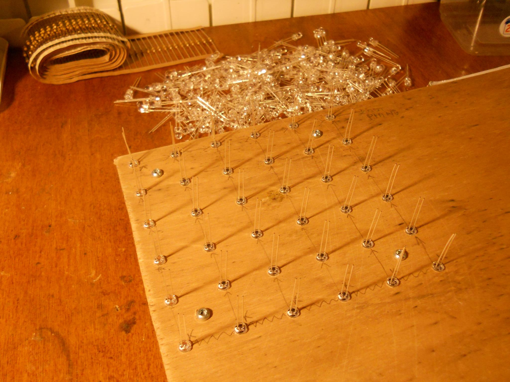
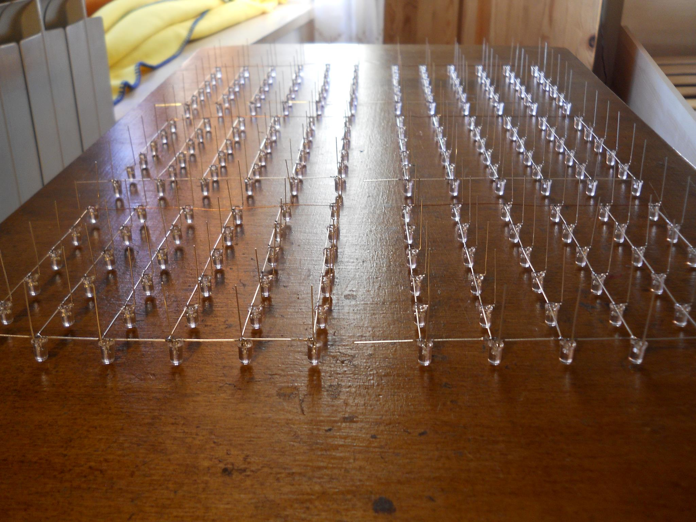
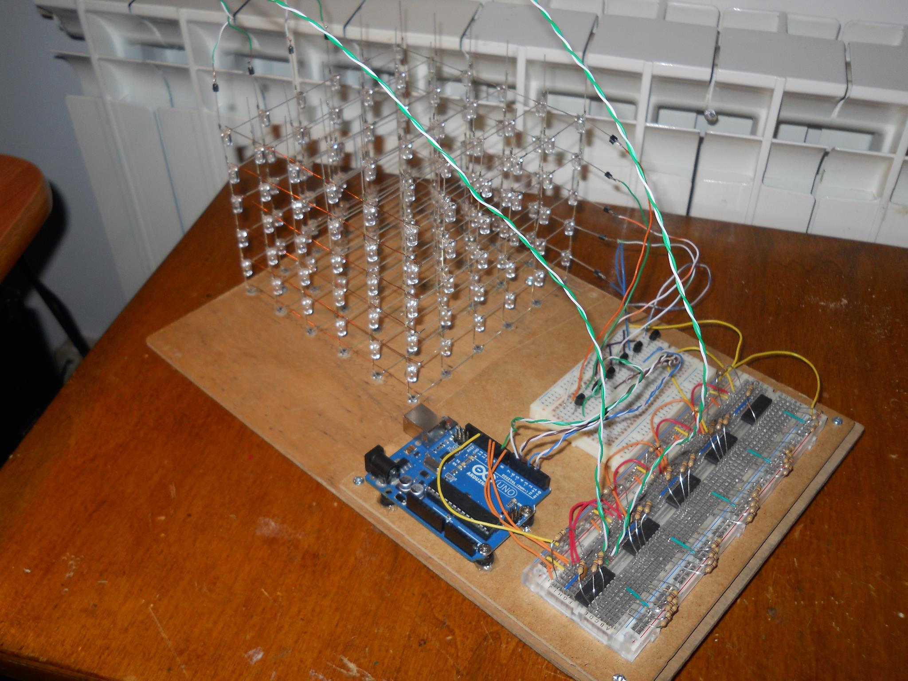

If you know Arduino then you will probably know this crazy project. This is my own 6x6x6 LED cube I built because I had nothing to do. It works deceiving our brain: it's based on the Persistence of Vision (PoV) effect. Turning on individually and independently all the 216 LEDs at the same time is, in terms of energy, a lot expensive, and also we require 216 I/O pins from Arduno. Connecting the cathode pins of all the LEDs of a single layer together (common GND layer) and the anode pins af all the LEDs on single a column we can reduce the number of I/O pins required to 36+6 pins (but still many pins for Arduino UNO). Thaking advantage of the PoV effect, we can control individually all the 216 LEDs turning on a layer at a time very quickly. I started this project creating a "hole mask" in order to solder all the LEDs of a single layer.
 After hours of LEDs soldering I joined all the six layers and I've tested them in the rough way you can see in the picture below.
Since Arduino UNO has only 13 digital pins plus 6 analog pins, so it has 19 I/O pins, the only way to control all the 36 columns and the 6 layers is to use the so called shift register.